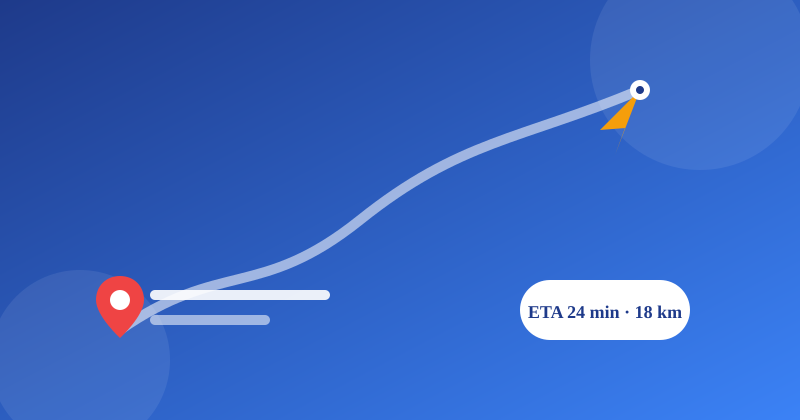

5 Best Free Navigation Apps for Android (2026)

A good navigation app does more than draw a line on a map: it reroutes you around traffic before you are stuck in it, works when your signal drops, and tells you which lane to be in before the turn. We tested the most popular free navigation apps on a mid-range Android phone for one question: which one actually gets you there fastest and most reliably — without a subscription, constant ads, or selling your location history?
What we tested
- Live traffic & rerouting — whether the app spots a jam or closure early and offers a genuinely faster route, not just a warning
- Offline maps — how well the app works with no signal, and how much storage the downloaded maps need
- Walking & public transport — directions that go beyond driving, including buses, trains and walking routes
- Ads & privacy — what is free, what needs a subscription, and whether the app tracks your location for advertising
1. Google Maps — best free, best all-rounder
Google Maps is the default for a reason: it covers driving, walking, cycling and public transport in one app, with live traffic, automatic rerouting, and real-time bus and train updates in most cities. Its local search is unmatched — opening hours, photos, reviews and how busy a place is right now are all built in — and Street View and saved lists make it useful for planning trips, not just driving. Offline maps are available by downloading an area in advance. The trade-off is privacy: it is a Google service, so your location history and searches feed your Google account unless you turn that off. If you want one navigation app that does everything well, start here.
2. Waze — best for live traffic and road alerts
Waze is built on reports from other drivers, so it often knows about an accident, speed camera, pothole or police checkpoint before any other app. Its rerouting around live traffic is the most aggressive of the apps here, and its ETAs are consistently accurate on busy roads. It also shows fuel prices, toll costs and parking options along your route, and works with Android Auto. The catch is that Waze is driving-only — there is no walking or public transport mode — and its map data is thinner than Google Maps outside big cities. If most of your navigation is driving in traffic, this is the strongest free pick.
3. HERE WeGo — best free offline maps and public transport
HERE WeGo is the quiet workhorse of this list: download a whole country or continent once, then navigate fully offline — driving, walking and public transport in more than 1,900 cities — with no account and no ads in the way. It supports waypoints, saved places in collections, and parking guidance at your destination. The interface feels plainer than Google Maps, and live traffic is less detailed, but for travelling abroad or driving through areas with weak signal, its offline maps are the most dependable free option here. If you travel a lot or your route regularly loses signal, install this alongside your main app.
4. Organic Maps — best for privacy and hiking
Organic Maps is the only app on this list that is fully free, ad-free and collects no data at all — it is open-source, built on OpenStreetMap, and works 100% offline including search and navigation. It is unusually detailed for walking, hiking and cycling, with contour lines, hiking trails, bike routes and elevation, and its maps update every two weeks. The trade-off is live traffic: there is none, so it cannot reroute you around a jam, and live public-transport timetables are still in development. If you value privacy, hike or cycle, or want a map that never needs the internet, this is the one.
5. Sygic — best offline 3D maps and driving features
Sygic combines detailed 3D offline maps with voice-guided navigation, speed camera alerts and a route planner that handles multi-stop trips well. It works with Android Auto, and a dedicated Motorbike Mode adds twisty-road routes and GPX import for riders. The free version covers the basics, but the best features — live traffic, speed camera alerts, head-up display and dashcam — need the Premium+ subscription. If you want polished offline maps with proper driving tools and do not mind a paywall for the extras, Sygic is the most feature-packed option here.
Quick comparison
| App | Free plan | Best for |
|---|---|---|
| Google Maps | Full app free | All-round navigation + places |
| Waze | Full app free | Live traffic & driver alerts |
| HERE WeGo | Full app free, offline maps | Offline travel + public transport |
| Organic Maps | 100% free, no ads, no tracking | Privacy, hiking & cycling |
| Sygic | Basic navigation free, extras paid | Offline 3D maps + driving tools |
Note: prices and free-tier features change often — always check the Play Store listing before installing. We never link to cracked or modded apps.